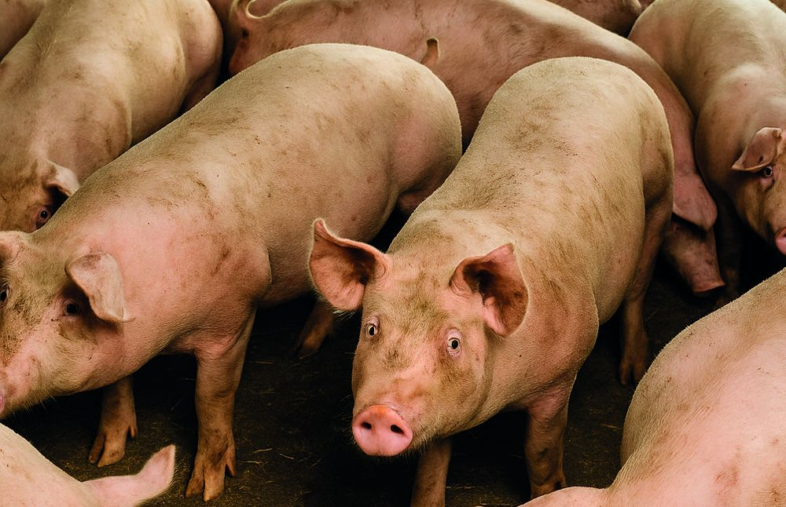
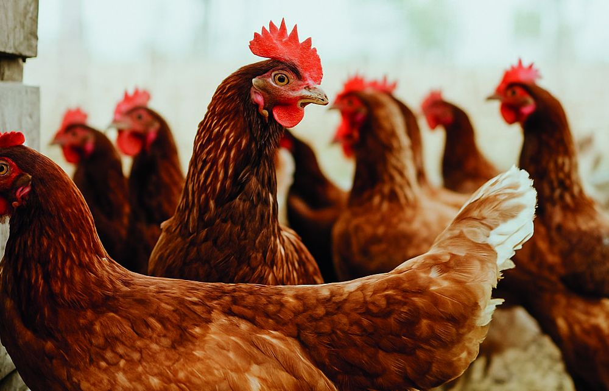
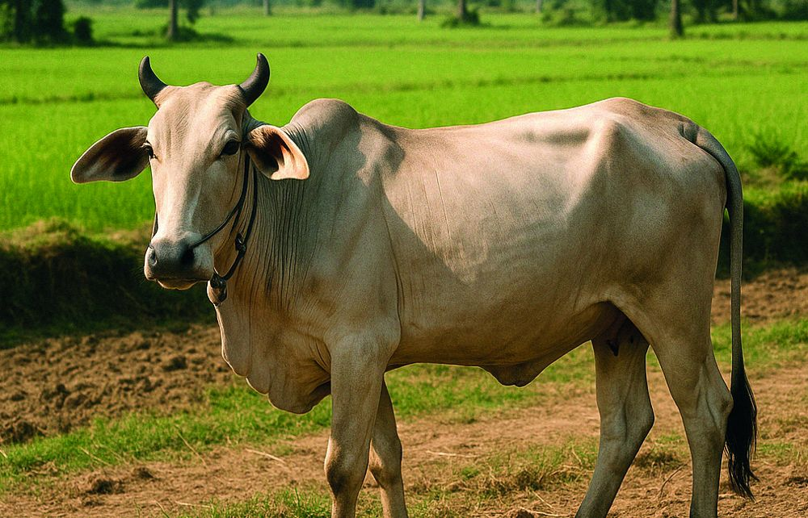
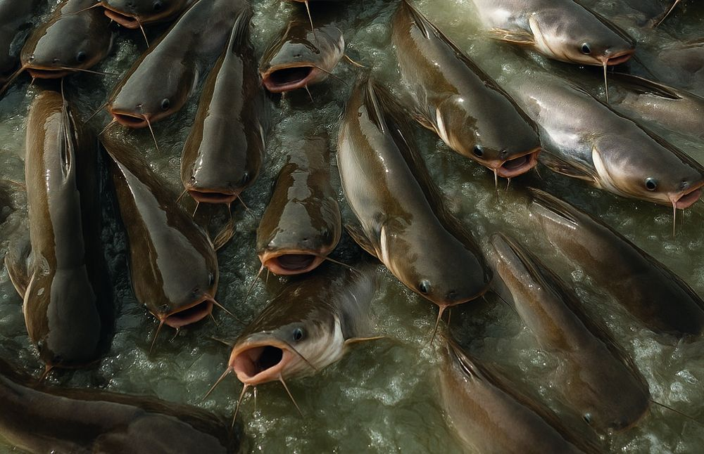

Swine
Feed for all production stages — from piglet starter to finishing pig, gestation and sows.
Agri Master Cambodia · Animal Nutrition
One of Cambodia's first locally owned feedmills, producing complete swine, poultry, ruminant and aquaculture feed.
Explore our feeds →About Agri Master
Established in 2004 as part of Medivet Cambodia, Agri Master serves all major segments of Cambodia's animal feed sector — and was the first Cambodian company to commercially produce floating fish feed.
Our storyOur products

Feed for all production stages — from piglet starter to finishing pig, gestation and sows.

Feed for native, layers and broilers — from chick starter to grower and finisher.

Feed for cattle, goats and others — from young stock to adult and fattening.

Feed for freshwater fish — from fingerlings through every growth stage to harvest.
Production capacity
We prioritise local raw materials — corn, cassava and rice by-products — combined with quality imports, and test every batch in-house for nutritional value, safety and consistency.
Milestones
Cambodia's first locally owned and operated animal feed producers.
Opened a modern feed mill in Kandal Province near Phnom Penh.
Cambodia's first aquafeed plant, with a capacity of 1,500 tons/month.
Expanding and modernising the facility, including new silos with 10,000 tons of storage capacity.
Our brands
Why Agri Master
Among Cambodia's first locally owned feedmills, serving the domestic market since 2004.
First Cambodian company to commercially produce floating fish feed.
Raw material inspection, production monitoring, lab analysis and finished product checks.
30,000 tons per month at full operation, with room to grow with demand.
Talk to our team about the right feed line for your farm or distribution business.
Contact us